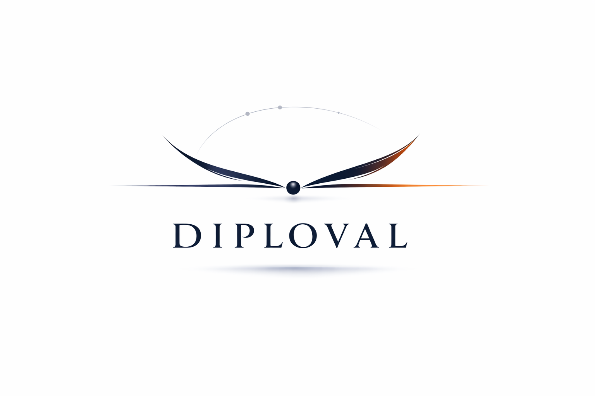

Mémorandum
Alerte civique et diplomatique
Document principal de position, d’alerte et d’interpellation à destination de relais civiques et institutionnels.

Conseil diplomatique, analyse stratégique, publications de référence et accompagnements rédactionnels à destination d’acteurs publics, associatifs, territoriaux et engagés.
Diplomatie • stratégie • territoires • vivant
Diploval accompagne les réflexions, les positionnements, les dossiers et les publications qui croisent enjeux diplomatiques, stratégiques, territoriaux, citoyens, juridiques et éthiques.
Temps fort
Le mémorandum constitue le document de fond. Le kit citoyen l’accompagne avec les lettres prêtes à l’emploi, la notice d’utilisation et le cadre de diffusion. Pour un envoi par mail ou courrier, il est recommandé d’envoyer le mémorandum avec le kit.
Mémorandum
Document principal de position, d’alerte et d’interpellation à destination de relais civiques et institutionnels.
Kit citoyen
Kit à utiliser avec le mémorandum : il contient les lettres prêtes à l’emploi, la notice d’utilisation et le cadre de diffusion. Lors d’un envoi par mail ou courrier, le mémorandum doit être joint au kit.
À propos
Diploval intervient à l’intersection de la diplomatie, de l’analyse stratégique, des enjeux territoriaux, des questions de souveraineté, des dynamiques citoyennes et des équilibres du vivant. Le site présente les prestations, les publications disponibles et les moyens de contact de manière sobre, lisible et directement exploitable.
Pour qui
Pour éclairer un dossier, une note, une prise de position ou une présentation institutionnelle.
Pour structurer un argumentaire, un courrier, un dossier de mobilisation ou un texte public.
Pour clarifier un sujet sensible, un positionnement ou une stratégie de diffusion.
Pour bénéficier d’une lecture synthétique, utile et exploitable sur des enjeux complexes.
Méthode
Le travail mené s’appuie sur une lecture multi-facteurs, une exigence de clarté, un souci de cohérence d’ensemble et une attention particulière à l’utilité concrète des livrables. L’objectif n’est pas de produire du texte pour produire du texte, mais des documents qui aident à mieux lire, mieux formuler et mieux agir.
Prestations
Une présentation sobre et directe, avec des blocs dépliables plutôt qu’un mur de texte.
Appui à la réflexion, au positionnement, à la formulation et à la clarification de dossiers sensibles ou complexes.
Livrables possibles : note courte, cadrage, courrier, texte de position.
Production de documents structurés, lisibles et exploitables pour appuyer une prise de position, une diffusion publique ou un usage interne.
Livrables possibles : note stratégique, mémorandum, synthèse, fiche d’appui.
Analyse d’un dossier sous l’angle géopolitique, énergétique, institutionnel, territorial, environnemental ou citoyen.
Livrables possibles : dossier de lecture, note d’analyse, synthèse de risques.
Soutien à la structuration d’une démarche, d’un dossier, d’un argumentaire ou d’un ensemble de documents à destination d’acteurs publics, associatifs ou citoyens.
Livrables possibles : argumentaire, dossier de diffusion, trame de courrier.
Travail de rédaction pour sites, dossiers, fiches, présentations et contenus structurants avec ton professionnel, lisible et crédible.
Livrables possibles : page institutionnelle, fiche de présentation, dossier de référence.
Approche transversale sur les sujets liant gouvernance, vivant, sécurité, souveraineté, droits, territoires et responsabilité publique.
Livrables possibles : note de cadrage, synthèse thématique, contenu de sensibilisation.
Publications mises en avant
Note stratégique
Lecture diplomatique, juridique et énergétique autour des appels à sécuriser le détroit d’Ormuz.
Note stratégique
Analyse des impacts environnementaux, sanitaires, hydriques et écologiques liés aux frappes sur infrastructures énergétiques.
Temps forts
Cette rubrique rassemble les dossiers mis en avant, les publications déjà disponibles et les prochains contenus appelés à être relayés.
Temps fort éditorial et civique mis en avant sur le site pour lecture, téléchargement et diffusion.
Les premières publications Diploval sont consultables depuis la rubrique dédiée.
Cette rubrique accueillera les prochains dossiers, analyses et publications mises en ligne.
Contact
Pour une demande d’analyse, d’accompagnement rédactionnel, de note stratégique, de dossier ou d’échange exploratoire, le contact peut se faire par formulaire ou par courriel.
Adresse : contact@diplovalconseil.fr